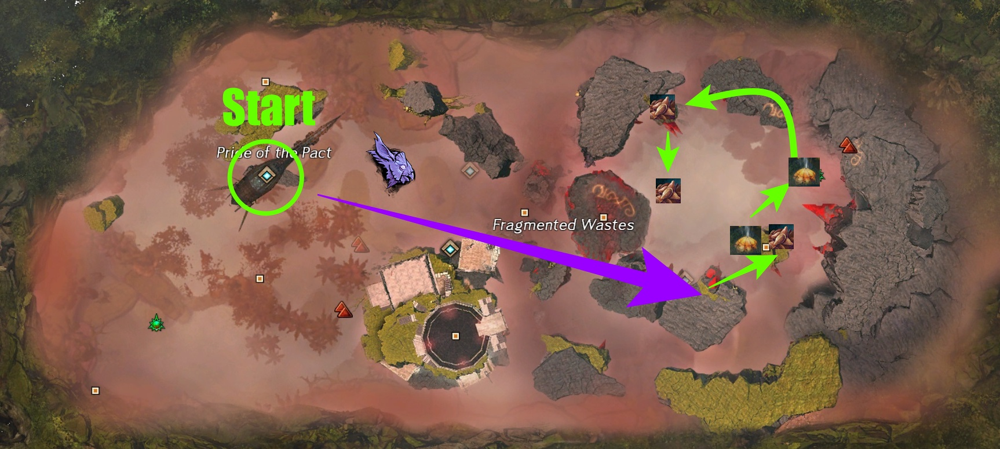
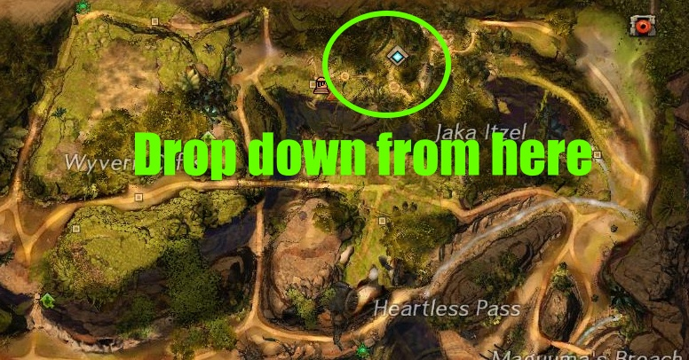
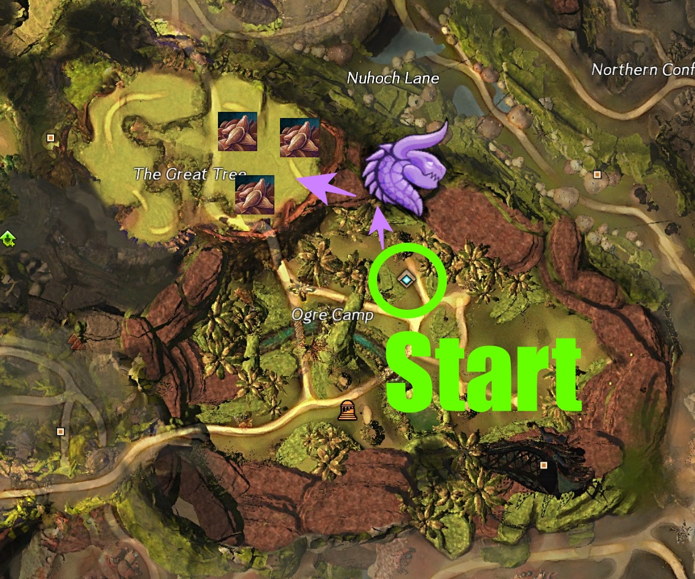
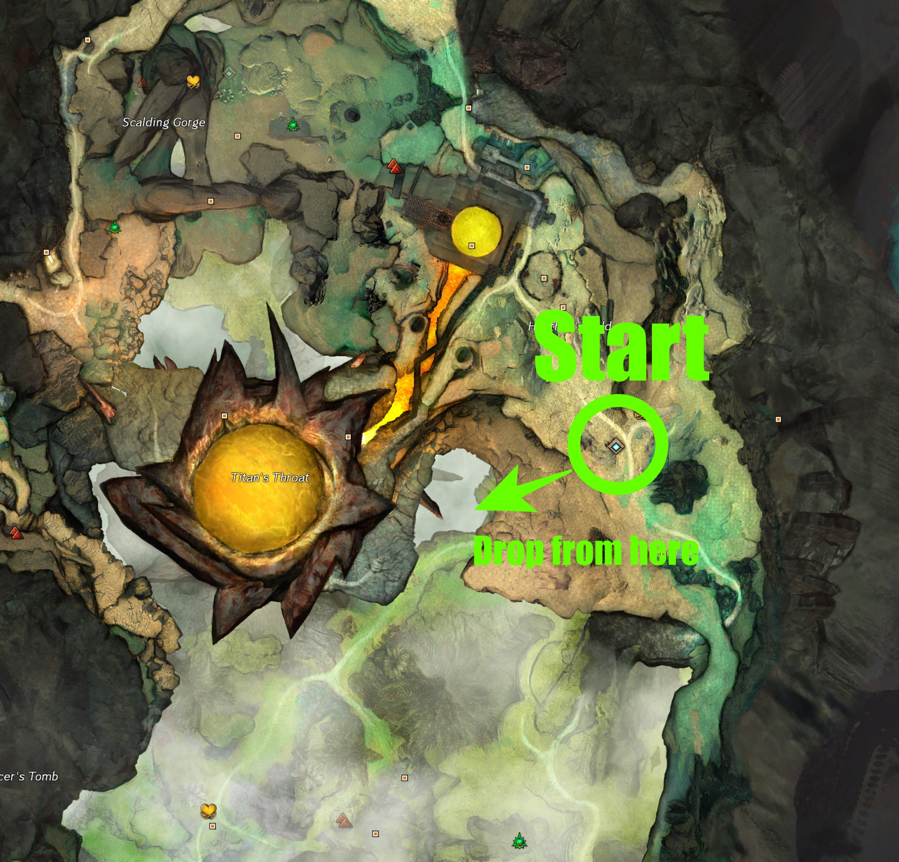

Potential Gold Per Hour
| Farm | Benchmark | Time |  |
 |
|---|
Disclaimer:
In order to receive materials such as variental herbs and quality meats, you need to have completed at least the Charr and Sylvari portion of the Gourmet Training achievement. These materials play a significant role in benchmarks that includes them.
Spreadsheet
To find averages, specific loots, and more, check out the spreadsheet.
Node Farm Calculator
While this farm uses specific Glyphs, check out the Node Farm Calcaulator to test out the estimated profits with different Glyphs. What are displayed in the benchmarks are not neccessarily the best Glyphs to use for maximum profits.
In order to receive materials such as variental herbs and quality meats, you need to have completed at least the Charr and Sylvari portion of the Gourmet Training achievement. These materials play a significant role in benchmarks that includes them.
Spreadsheet
To find averages, specific loots, and more, check out the spreadsheet.
Node Farm Calculator
While this farm uses specific Glyphs, check out the Node Farm Calcaulator to test out the estimated profits with different Glyphs. What are displayed in the benchmarks are not neccessarily the best Glyphs to use for maximum profits.
| Soulkeeper's Airship Waypoint [&BEsJAAA=].
From this waypoint, Griffon towards the east. The eastmost floating platform will have a couple of Flax in different elevations. The bouncing mushrooms there will guide to the next few Flax Seeds. |
 |
| Jaka Itzel Waypoint [&BOAHAAA=]
Drop straight down from the waypoint, below the village. |
 |
| Ogre Camp Waypoint [&BMwHAAA=]
From the waypoint, turn around and head up on the cliffs. Use Bunny or Skyscale |
 |
| Heathen's Hold Waypoint [&BM0JAAA=]
Head east, drop down, but not all the way. When you see a surface of a verdant area, drop down a little bit more into a cave. |
 |

 Patreon
Patreon  Paypal
Paypal